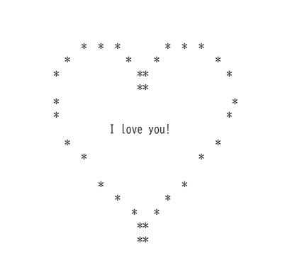

プログラムを実行すると、下のように表示されます。

import mathmath モジュールを使えるようにします。これを消すと sin や cos が使えず、エラーになります。
points = []ハートの点を入れるための空の箱を作っています。まだ中身はありません。
for t in range(0, 360, 10):角度を 0 度から 360 度まで、10 度ずつ変えながら計算します。数字を変えると点の密度が変わります。
rad = math.radians(t)度をラジアンに直しています。ラジアンは三角関数が理解できる単位です。
対応関係：角度: 0° → radian: 0、
角度: 90° → radian: π/2、
角度: 180° → radian: π、
角度: 270° → radian: 3π/2、
角度: 360° → radian: 2π
（変換式：rad = 度 × π / 180）
x = 16 * math.sin(rad) ** 3
y = 13 * math.cos(rad) - 5 * math.cos(2*rad)
- 2 * math.cos(3*rad) - math.cos(4*rad)この数式がハートの形を作っています。数字を変えると横幅や高さが変わります。
points.append((x, y))計算した座標を順番に points へ入れています。
width, height = 60, 30
canvas = [[" " for _ in range(width)] for _ in range(height)]出力の大きさを決めています。canvas は空白で埋めた画面。数字を変えると余白が変わります。
for x, y in points:
col = int(width/2 + x)
row = int(height/2 - y/2)
if 0 <= row < height and 0 <= col < width:
canvas[row][col] = "*"座標の位置に「*」を打っています。記号を "♥" に変えると、ハートがハートで描けます。
▶ ハートが描かれていくアニメーションを見る
msg = "I love you!"
mid_row = height // 2
mid_col = (width - len(msg)) // 2
for i, ch in enumerate(msg):
canvas[mid_row][mid_col + i] = ch中央にメッセージを置いています。文字列 msg を変えると、ハートの中の言葉が変わります。
for row in canvas:
print("".join(row))すべての行をまとめて画面に出しています。join() はリストの中の文字をひと続きにする命令です。
ここまでの説明をひとつにまとめた完全版です。コピーしてそのまま実行できます。
import math
points = []
for t in range(0, 360, 10):
rad = math.radians(t)
x = 16 * math.sin(rad) ** 3
y = 13 * math.cos(rad) - 5 * math.cos(2*rad) \
- 2 * math.cos(3*rad) - math.cos(4*rad)
points.append((x, y))
width, height = 60, 30
canvas = [[" " for _ in range(width)] for _ in range(height)]
for x, y in points:
col = int(width / 2 + x)
row = int(height / 2 - y / 2)
if 0 <= row < height and 0 <= col < width:
canvas[row][col] = "*"
msg = "I love you!"
mid_row = height // 2
mid_col = (width - len(msg)) // 2
for i, ch in enumerate(msg):
canvas[mid_row][mid_col + i] = ch
for row in canvas:
print("".join(row))